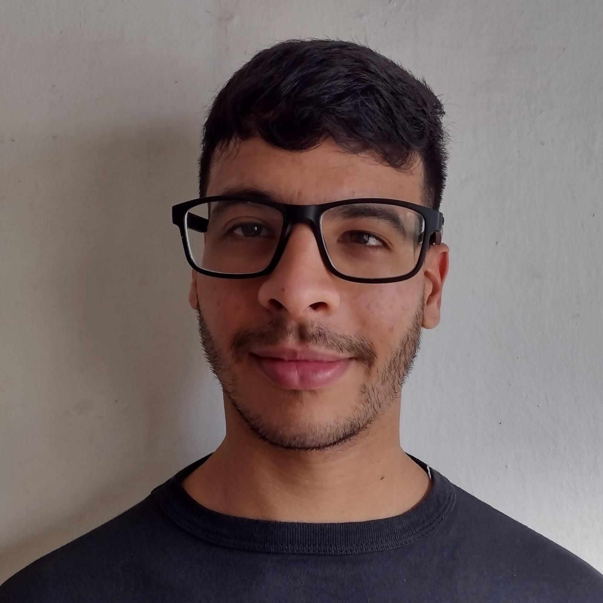

Fabrizio Damian Chaparro
indie Developer
Estudiante de la Tecnicatura en programación en la Universidad Guillermo Brown UNAB, de A drogue Buenos Aires Argentina.
Modo Oscuro
indie Developer
Estudiante de la Tecnicatura en programación en la Universidad Guillermo Brown UNAB, de A drogue Buenos Aires Argentina.
Septiembre 2023 - Actualidad
Como desarrollador indie me encuentro actualmente aprendiendo y desarrollado un juego por mi cuenta en el motor Godot Engine, me encargo de la lógica del juego..
Octubre 2016 - septiembre 2020
A finales de 2016 me puse a aprender y utilizar el Motor Unity Engine en cual hice un par de proyectos..
Me gusta tocar la Batería empecé a tocar después de que terminé la segundaria en el año 2015 y los estilos que más me gustan son el Hard Rock y el Heavy Metal.
HTML
CSS
JavaScript
MySQL
GDScript
C#
Godot Engine
Unity Engine
Wondershare Filmora X
Juego de plataformas 2D basada en un tutorial esta version fue modificada y personalizada pueden descargar el APK dando click en el botón de la demo.